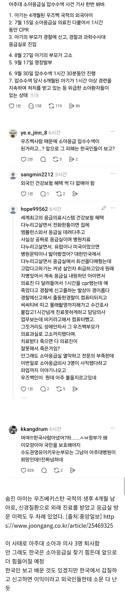

아주대 소아과 압수수색 사건으로 의사3명이 퇴사하자 전국민이 분노했는데 신고한 부모가 알고봤더니 외국인이어서 여론이 더 들끓는중

아주대 소아과 압수수색 사건으로 의사3명이 퇴사하자 전국민이 분노했는데 신고한 부모가 알고봤더니 외국인이어서 여론이 더 들끓는중
한국인도 아니고 외국인 따위 때문에 저러는게 맞냐?
그럼 한국인이면 저래도 되냐?
국적이 문제가 아니라 대갈빡 인성새끼가 있냐 없냐 문젠데.
의도적으로 애 낳지 말라고 누르고 있는거냐고
이유가 있으니 영장이 나왔고 집행을 했겠지
또또 뉴스만보고 물고 뜯네
외국인이든 한국인이든 신고해서 절차대로 진행했을텐데
시스템이 그렇게 움직인건데 그게 그 외국인 탓이되냐??
여긴 원래 그런 곳이야 ㅋㅋ 팩트는 중요하지 않음. 기회될 때 혐오해야 힌다구!
한국인이 의료 망칠때는 가만있다가 외국인때문에 퇴사하는거 보고 발작하는것도 웃기지않냐
느그나라로꺼져 씹새끼들아
전부 추방!
우즈벡 국적 가진 외국인 가입자는 건강보험 흑자임. 중국 국적이 문제였지…
한국인이 고소를해도 응급실을 압수수색하는 경우가 존나 드물탠데 이게 뭔일임???
압수수색에 이르게 할 정도로 병원이 협조를 안 한 게 문제 아니냐
ㅋㅋㅋㅋㅋㅋㅋ
경검이 영장쳤고 판사가 받아들임
제삼자인 사법기관에서 조사 필요성을 인정받은건데
환자목숨 볼모로잡고 이런 협박 할 수 있는건 의사밖에 없을듯
볼모는 무슨
외상성 횡경막 탈장 같은 초 희귀 질환을 대학병원 소아 응급 교수도 자기라도 이건 초기에 발견 못했을 거라는 얘기를 해도 애가 죽었으면 무조건 살인의사 ㅇㅈㄹ 하면서
죄없는 소아과의사 세명을 구치소로 보내고 기사로 살인의사 사람이 죽었는데 뻔뻔하다 이따위로 기사쓴 건 누구냐?
심지어 또 1심은 의료 과실이 있을 수 있다고 판결나기도 했지
애초에 지금 법 자체가 기울어진 운동장이라고 이대로면 진료를 도저히 할 수 가 없다고 십수년째 시위하고 있는데 너는 판사가 뭐라 했으면 무조건 맞는 말이고 의사는 잘못되었다고 항변하면 목숨 볼모로 잡는거냐?
애초에 소아응급은 사명감이 아니고서는 할 이유가 하나도 없는 과인데 돈도 못벌어 몸도 힘들어 소송도 많이 당해
오로지 사람 살려보겠다고 자기 인생 갈아넣는 사람들에 대한 대우가 이거라서 그냥 안 하겠다는 게
그게 협박이냐?
진짜 너는 어떤 교육을 받고 자랐길래 같은 직종에서 일은 훨씬 고되고 월급은 1/3도 안되는 수준에서 일을 해도 죄없이 압수수색 당하고 협박당하고 해도 그냥 해야되고 안 하면 협박이라는 개소리를 뻔뻔한 낯짝으로 지껄일수 있는거냐?
너는 꼭 지금 니가 일하면서 시급 동종업계의 1/3만 받고 아무 불평 불만 없이 일해라
사명감 가지고
진짜 ㅈ같은 소리하고있어 어이가 없어서
나라 꼬라지 레전드ㅋㅋㅋ
외국인인게 무슨 상관이야 건보료 냈으면 해택 받는거고 고소는 시민의 권리인데 그렇게 건보가 걱정되면 건보료나 다 내셈
쉬었음극우청년들이 뭘 알겠음
그냥 중국인 외국인 다 배척하고 이재용 최고라고 외치면 세상이 좋아질거라 생각하는 애들임
엄
자자 내가 어디서 부터 잘못된건지 알려줄게.
- 우리나라같이 아프면 무한 치료 받는 나라가 없는데 이걸 남용하는 사람들이 많아짐
약받아가지고 하루먹고 쳐 버리고 하는 의료낭비국가임
- 먼저 의약분업으로 인해서 처방조제료로 나가는 돈이 존나 많아짐. 약국 자리 좋은데 권리금이 50억씩 함. 그거 다 건강보험 재정으로 메꾸는거고, 쉽게 말하면 건강보험재정이 건물주한테 빠져나가는 구조를 만들었음. 그리고 의약분업 시작하고 나서 우리 건강보험료 나가는게 10배 넘게 올랐다고 보면됨.
- 정치인들이 인기영합해서 개 잣같은 거를 보험되게 다 편입해버림. 좌우 가릴거 없음. 임플란트 없다고 죽는거 아니고 치매로 다죽어가는 사람들 치료한다 솔직히 국가경쟁력에 도움이 안되는데 이런거 선거에서 노인표 가져온다고 무리하게 보험화 하면서 결국 외상환자, 소아과에게 돌아갈 돈이 없어지고 건강보험료만 매년 올라감. (내년에 우리 월급에서 더 떼일것임)
- 변호사 증원하게되면서 어디서든 싸움을 부추기는 미국같은 나라가 되고 있음. 선진국 되어가니 어쩔수 없음
- 검판사 전관예우가 없어짐. 그들이 돈벌 구멍이 점점 줄어드니까 명예로 이름을 남기기 위해서 관행과 다른 무리한 판결을 사회적으로 계속 만들어내고 있음. 약자를 구원한다는 솔로몬병에 취해 노동계 의료계쪽에 개 ㅄ같은 (혹은 시대를 앞서는) 무리한 판결을 많이 만들어냈음. 선진국 되어가니 어쩔수 없음.
- 사람 목숨값도 갈수록 비싸짐. 최저임금이 가파르게 오르면서 노동 상실율에 따른 공식 깽값이 치솟고 있음.
- 결국 이런 문제들이 신뢰비용의 상승으로 이어져서 다 의료비에 반영되어가고 있는데, 필수 의료쪽은 깽값은 높은데 국가가 비용을 통제하는 구조임. 병원측에서 비용전가를 환자들에게 못시키니까 그냥 의사들을 치워버리는거.
- 이런 비용을 메꾸기 위해 예전에는 병원에서 꼼수로 받는 임의 비급여같은게 있었는데 안기종이라는 희대의 씨ㅂ ㅅㄲ가 임의비급여를 받을 구멍을 법적으로 다 막아버림. 비용전가가 안되면 운영이 안되니까 걍 샷다 닫는거.
- 나라에서 허용하는 치료 외에는 돈을 받을수 없다.......는 세계유일의 이상한 법이 있는 나라이고, 이걸 판사들이 환자들이 악용하게 못을 박아버림. 이 인간은 왜 문제냐면, 본인은 애매한 시스템을 이용해서 치료 받아놓고, 자기가 낸돈 아까워서 소송을 걸어서 돈 돌려 받으면서, 어떻게든 추가 비용부담을 해서라도 치료를 받고 싶은 선의의 환자들이 치료를 받기 어렵게 만들어버림.
-정치인+판사+안기종+국민의 환장 콜라보임.
-의사들도 문제 많지, 근데 다른나라는? 다 똑같다 사람사는거 다 똑같지 우리나라만 의사들이 유독 부패한것도 아닌데 자기가 의사를 욕하는게 무의식적으로 시기심에 발로로 그러는건지 좀 생각을 해야하는데, 일단 의사들 싸가지없고 돈많은 티비에서 그리는 그런모습만 보고 두들겨 패는거 좋아하니.....시스템의 문제를 의사들이 20년전부터 부르짖었는데 결국 의사들 말 하는거 반대로만 하고 있음.
아아...
결국 다수의 이기심과 시기 질투와 멍청함으로 다같이 피해보는거지 그냥 병신이된거임 돈 많이 벌어야됨ㅜㅜ 살려면
의사들이 20년전부터 뭐라한 시스템의 문제가 뭔데..
어디 정리된거 있나?
의료소송은 대부분 의료과실이 없어도 사람이 죽었당께요로 시작되는 경우가 대부분이다
실제 과실이 있는 경우 병원측에서 소송 이전에 협상을 하기 때문에
우리나라 의료소송의 특징은 의료과실이 없어도 도의적 책임을 운운하며 배상을 매긴다
심지어 특정과가 없어서 진료가 안된다고 설명해도 아니 사람이 죽었으니까 너네 도의적 책임
(추락 사건 두부 손상으로 사망)
특정과가 없지만 골든타임을 놓치면 사망에 이르는 경우 어쩔 수 없이 비슷한 과에서 수술 시행하다가 잘못되도 책임
(소아외과가 없어서 일반외과에서 수술 후 사망 사건)
필수과 시급이 미용과에 심하면 1/20도 안되는 의료 급여
제왕절개 시술 -> 피부 절개 지방층 절개 근육층 절개 복강 내로 진입 자궁 확인 자궁 외측 절개 내측 직각으로 절개 태아 꺼내서 산모, 아빠한테 아이 확인, 탯줄 절개, 이후 척추마취에서 전신 마취로 전환 태반 제거 및 자궁 내막 정리 역순으로 자궁 봉합 복강 확인 근육층 봉합 지방층 정리 피부봉합 -> 39만원
복부 지방 흡입 -> 피부절개 지방층 확인 및 석션 도구로 흡입 피부 봉합 -> 700만원
ㅇㅇ
질문하신 내용은 2018년 발생한 ‘성남 횡격막 탈장 환아 사망 사건’으로 의사 3명이 법정 구속되어 수원구치소에 수감됐던 사건을 의미하는 것으로 보입니다.
해당 사건의 핵심 요약과 진행 경과는 다음과 같습니다.
📌 사건 개요 및 구속
• 사건 원인: 2013년 경기도 성남의 한 병원에서 8세 어린이가 복통으로 내원했으나, 의료진이 횡격막 탈장을 정확히 진단하지 못해 환아가 사망하는 사건이 발생했습니다.
• 1심 판결 (2018년 10월): 법원은 업무상 과실치사 혐의로 소아청소년과 의사, 응급의학과 의사, 가정의학과 전공의 등 의사 3명에게 실형을 선고하고 법정 구속했습니다.
• 구치소 수감: 구속된 의사 3명은 수원구치소에 수감되었으며, 의료계는 "의도적 위해가 없는 의료 행위에 대해 실형을 선고하고 구속한 것은 과도하다"며 거세게 반발했습니다.
⚖️ 이후 재판 결과 (항소심)
• 보석 석방: 구속된 의사들은 유족 측과 합의한 후, 구속 30여 일 만인 2018년 11월에 보석으로 석방되어 불구속 상태로 재판을 받았습니다.
• 2심 판결 (2019년 2월): 수원지방법원 항소심 재판부는 원심을 파기하고 아래와 같이 선고했습니다.
• 응급의학과 의사: 무죄
• 소아청소년과 의사: 금고 1년 6개월 / 집행유예 3년
• 가정의학과 전공의: 금고 1년 / 집행유예 3년
이게 외상성 소아 횡경막 탈장 사건인데
선천성 횡경막 탈장은 태어날때부터 그런거니까 오히려 쉽게 발견할 수 있지만 나이가 들어서 외상성으로 발생한 건 일반적인 소아과에선 발견하기 힘들어 오죽하면 애기라도 외상은 소아과에서 안된다는 안내를 항상 하잖아
근데 저건 일반 소아과에서 외상으로 발생한 손상을 조기에 발견하지 못했다고 책임을 물린 사건이라고
아니 못한다고 얘길 해도 왜 못하냐 하면서 처벌하면 뭐 어떻게 하라고????
너는 아마 애를 안키울거 같으니 잘 모르겠지만 주변에 애 키우는 집 있으면 물어봐라
소아과에서 물리적인 충격으로 발생한 손상(외상)을 보는 곳이 있냐고
백이면 백 죄다 못한다고 한다
근데 법은 그걸 해야된데 어떻게??????
한국인한테 잘배웠네
신고자 국적이 중요한게 아니라
경찰 수사와 영장 신청 발부 까지의 절차가 합당했냐를 따져봐야 할 것 같은데
구체적인 내용을 못찾겠네 아는 개붕이 있음?
경찰과 당시 검사와 판사가 우연히도 모두 바보라는 가정을 해야하나?
정부: 이래도 바이탈 할거야? 독하다 독해 ㅋㅋ
경찰이 존나 무식한데 권한은 늘어났으니 찐빠는 더 많이 생김 당연히 일관성도 없고 개판되는거